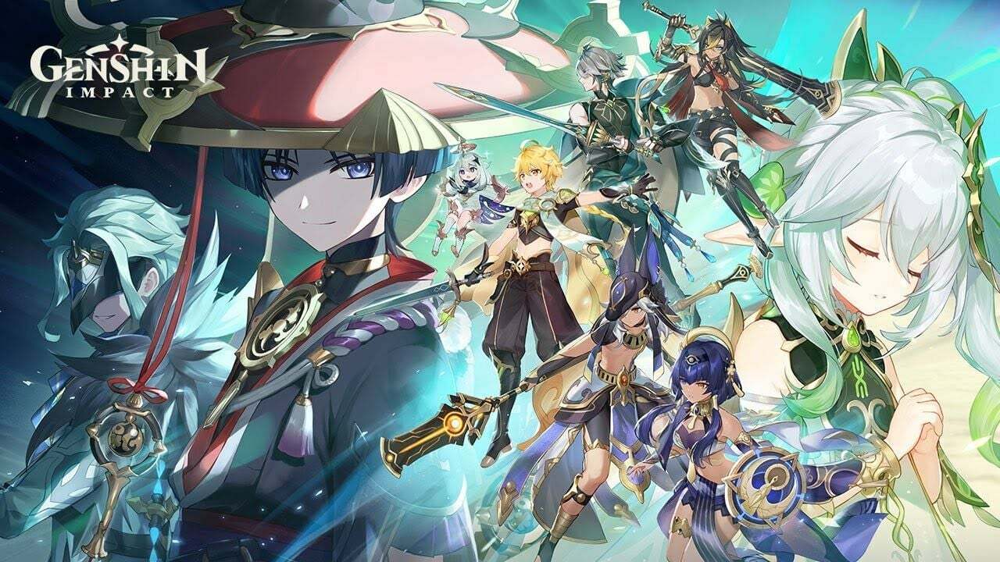

เกม Valorant เป็นเกมออนไลน์แนว First-Person Shooter (FPS) ที่ถูกพัฒนาโดย Riot Games
ซึ่งเป็นบริษัทที่ก่อตั้งมาจากการพัฒนาเกม League of Legends ซึ่งเป็นเกมอีสปอร์ตชื่อดัง.
Valorant ได้เปิดตัวอย่างเป็นทางการในเดือนมิถุนายน 2020.
Valorant ได้รับความนิยมในวงการเกมอีสปอร์ตและมีการอัพเดตเพื่อเพิ่มความสมจริงและความ
สมดุลในเกม. นอกจากนี้, Riot Games ยังให้การสนับสนุนการแข่งขันทางออนไลน์และอีสปอร์ต
สำหรับ Valorant ทำให้เกมนี้เป็นหนึ่งในเกม FPS ที่ได้รับความนิยมมากในวันนี้.
อ่านต่อ
Genshin Impact

"Genshin Impact" เป็นเกมแอ็คชันและเกมบทบาทที่พัฒนาโดย miHoYo, บริษัทนักพัฒนาเกม
จากประเทศจีน. เกมนี้ได้เปิดตัวเป็นทางการในเดือนกันยายน 2020 และมีการรับรองจากผู้เล่นในทั่วโลก.
Genshin Impact ได้รับความนิยมสูงจากทั่วโลกไม่น้อยเพราะกราฟิกที่สวยงาม, ระบบเกมที่เล่น
ได้ทั้งบนพีซีและอุปกรณ์พกพา, รวมถึงระบบบูตที่น่าสนใจ. นอกจากนี้, โปรแกรมสนับสนุนต่อการ
พัฒนาและเพิ่มเติมเนื้อหาในอนาคต.
อ่านต่อ